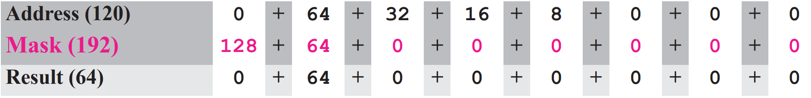

Ko je omrežje podomrežno, je prvi naslov v podomrežju identifikator podomrežja in ga usmerjevalnik uporablja za usmerjanje paketov, namenjenih temu podomrežju. Glede na kateri koli naslov v podomrežju lahko usmerjevalnik poišče podomrežno masko z enakim postopkom, o katerem smo razpravljali. To storimo tako da, IN-iramo podani naslov povezanega z masko podomrežja. Bližnjice, ki smo jih obravnavali v prejšnjem razdelku, lahko uporabimo za iskanje naslova podomrežja.
V primeru 5.19 pokažemo, da je omrežje razdeljeno na štiri podomrežja. Ker je eden od naslovov v podomrežju 141.14.120.77, lahko najdemo naslov podomrežja kot:

Vrednosti prvega, drugega in četrtega bajta se izračunajo s pomočjo prve bližnjice za operacijo IN. Vrednost tretjega bajta se izračuna z uporabo druge bližnjice za operacijo IN.
Prikazali bomo, kako oblikovati podomrežje, ko razpravljamo o brez-razrednem naslavljanju. Ker je razredno naslavljanje poseben primer brez-razrednega naslavljanja, lahko to, o čemer bomo razpravljali kasneje, uporabimo tudi za razredno naslavljanje.
Podomrežje ni moglo v celoti rešiti težav z izčrpanjem naslovov pri razrednem naslavljanju, ker večina organizacij svojih odobrenih blokov ni želela deliti z drugimi. Ker so bili bloki razreda C še vedno na voljo, vendar velikost bloka ni ustrezala zahtevam novih organizacij, ki so se želele pridružiti internetu, je bila ena od rešitev super-mreža. Pri super-mreži lahko organizacija združi več blokov razreda C, da ustvari večji obseg naslovov. Z drugimi besedami, več omrežij se združi, da se ustvari super-omrežje. S tem lahko organizacija zaprosi za več blokov razreda C namesto samo enega. Na primer, organizaciji, ki potrebuje 1000 naslovov, je mogoče dodeliti štiri bloke razreda C.
Maska super-omrežja je obratna od maske podomrežja. Maska podomrežja za razred C ima več enk kot privzeta maska za ta razred. Maska super-omrežja za razred C ima manj enk kot privzeta maska za ta razred.
Slika 5.26 prikazuje razliko med masko podomrežja in masko super-omrežja. Maska podomrežja, ki razdeli blok na osem pod blokov, ima tri več enke (23 = 8) kot privzeta maska; super-netna maska, ki združuje osem blokov v en super blok, ima tri manj enk od privzete maske.
Pri super-omrežju mora biti število naslovov razreda C, ki jih je mogoče združiti v super mrežo, potenca na 2. Dolžino id-ja super-omrežja lahko najdete s formulo
nsuper = n – log2c
v katerem nsuper definira dolžino id super-neta v bitih in c definira število blokov razreda C, ki so združeni.
Na žalost je super-omrežje povzročilo dve novi težavi: Prvič, število blokov, ki jih je treba združiti, mora biti potenca na 2, kar pomeni, da mora organizacija, ki potrebuje sedem blokov, dodeljenih vsaj osem blokov (zapravljanje naslovov). Drugič, super omrežje in podomrežje sta res zapletla usmerjanje paketov v internetu.
Podomrežje in super-omrežje pri razrednem naslavljanju v resnici nista rešila problema izčrpanja naslovov in je otežila distribucijo naslovov in proces usmerjanja. Z rastjo interneta je postalo jasno, da je kot dolgoročna rešitev potreben večji naslovni prostor. Večji naslovni prostor pa zahteva, da se poveča dolžina naslovov IP, kar pomeni, da je treba spremeniti format paketov IP. Čeprav je bila rešitev za dolge razdalje že zasnovana in se imenuje IPv6 (glej poglavja 26 do 28), je bila zasnovana tudi kratkoročna rešitev za uporabo istega naslovnega prostora, vendar za spremembo porazdelitve naslovov, da se zagotovi pravičen delež vsaki organizaciji. Kratkoročna rešitev še vedno uporablja naslove IPv4, vendar se imenuje brezrazredno naslavljanje. Z drugimi besedami, privilegij razreda je bil odstranjen iz distribucije, da bi nadomestili izčrpavanje naslova.
Obstajala je še ena motivacija za brezrazredno naslavljanje. V devetdesetih letih prejšnjega stoletja so ponudniki internetnih storitev (ISP) prišli do izraza. ISP je organizacija, ki omogoča dostop do interneta za posameznike, mala podjetja in srednje velike organizacije, ki ne želijo ustvariti internetne strani, vendar se želijo vključiti samo v internetne storitve (kot so e-poštne storitve). Te storitve lahko zagotovi ponudnik internetnih storitev. Ponudniku internetnih storitev se dodeli širok razpon naslovov in nato naslove razdeli (v skupine 1, 2, 4, 8, 16 in tako naprej), tako da gospodinjstvu ali malemu podjetju ponudi vrsto naslovov. Stranke so prek klicnega modema (DSL) ali kabelskega modema povezane z ISP. Vendar vsaka stranka potrebuje nekaj naslovov IPv4.
Leta 1996 so internetne oblasti napovedale novo arhitekturo, imenovano brezrazredno naslavljanje. Pri brezrazrednem naslavljanju se uporabljajo bloki spremenljive dolžine, ki ne pripadajo nobenemu razredu. Imamo lahko blok z 1 naslovom, 2 naslovoma, 4 naslovi, 128 naslovi itd.
Pri razrednem naslavljanju je bil celoten naslovni prostor razdeljen na pet razredov. Čeprav je bil vsaki organizaciji dodeljen en blok v razredu A, B ali C, je bila velikost blokov vnaprej določena; organizacija je morala izbrati eno od treh velikosti blokov. Edini blok v razredu D in edini blok v razredu E sta bila rezervirana za posebne namene. Pri brezrazrednem naslavljanju je celoten naslovni prostor razdeljen na bloke spremenljive dolžine. Teoretično imamo lahko blok z 20, 21, 22, . . . , 232 naslovov. Edina omejitev, ki jo bomo razpravljali kasneje, je, da mora biti število naslovov v bloku potenca na 2. Organizaciji lahko dodelimo en blok naslovov. Slika 5.27 prikazuje razdelitev celotnega naslovnega prostora na bloke, ki se ne prekrivajo.

Pri razrednem naslavljanju je bilo naslavljanje na dveh ravneh zagotovljeno z razdelitvijo naslova na net-id in host-id. Net-id je definiral omrežje; host-id je definiral gostitelja v omrežju. Enako idejo je mogoče uporabiti pri brez-razrednem naslavljanju. Ko je organizaciji dodeljen blok naslovov, je blok dejansko razdeljen na dva dela, predpono in pripono. Predpona ima enako vlogo kot net-id; pripona ima enako vlogo kot host -id. Vsi naslovi v bloku imajo isto predpono; vsak naslov ima drugačno pripono. Slika 5.28 prikazuje predpono in pripono v brezrazrednem bloku.
Pri brezrazrednem naslavljanju predpona definira omrežje, pripona pa gostitelja.

Pri razrednem naslavljanju je dolžina mreže n odvisna od razreda naslova; lahko je samo 8, 16 ali 24. Pri brezrazrednem naslavljanju je dolžina predpone n odvisna od velikosti bloka; lahko je 0, 1, 2, 3, . . . , 32. Pri brezrazrednem naslavljanju se vrednost n imenuje dolžina predpone; vrednost 32 − n se imenuje dolžina pripone.
Dolžina predpone pri brezrazrednem naslavljanju je lahko od 1 do 32.
Kakšna je dolžina predpone in dolžina pripone, če se celoten internet obravnava kot en sam blok s 4.294.967.296 naslovi?
Rešitev
V tem primeru je dolžina predpone 0, dolžina pripone pa 32. Vseh 32 bitov se razlikuje
za definiranje 232 = 4.294.967.296 gostiteljev v tem posameznem bloku.
Kakšna je dolžina predpone in dolžina pripone, če je internet razdeljen na 4.294.967.296 blokov in ima vsak blok en sam naslov?
Rešitev
V tem primeru je dolžina predpone za vsak blok 32, dolžina pripone pa 0. Vseh 32 bitov
je potrebnih za definiranje 232 =
4.294.967.296 blokov. Edini naslov v vsakem bloku je definiran s samim blokom.
Število naslovov v bloku je obratno odvisno od vrednosti dolžine predpone, n. Majhen n pomeni večji blok; velik n pomeni majhen blok.
Dolžina net-id pri razrednem naslavljanju ali dolžina predpone pri brezrazrednem naslavljanju igrata zelo pomembno vlogo, ko moramo izvleči informacije o bloku iz danega naslova. Vendar pa je tu razlika v razrednem in brezrazrednem naslavljanju.
Pri brez-razrednem naslavljanju moramo v vsak naslov vključiti dolžino predpone, če potrebujemo najti blok naslova. V tem primeru se naslovu, ločenemu s poševnico, doda dolžina predpone n. Zapis se neuradno imenuje poševni zapis. Naslov v brez-razrednem naslavljanju lahko nato predstavimo, kot je prikazano na sliki 5.29.

Poševni zapis se uradno imenuje rez-razredno med domeno usmerjanje ali zapis CIDR (izgovorjeno cider).
Pri brez-razrednem naslavljanju moramo poznati enega od naslovov v bloku in dolžino predpone, da definiramo blok.
Pri brez-razrednem naslavljanju naslov sam po sebi ne more definirati bloka, kateremu pripada. Na primer, naslov 230.8.24.56 lahko pripada številnim blokom, nekateri od njih so prikazani spodaj z vrednostjo predpone, povezane s tem blokom:

Ideja omrežne maske pri brez-razrednem naslavljanju je enaka tisti pri razrednem naslavljanju. Omrežna maska je 32-bitno število z n skrajnimi levimi biti, ki so vsi nastavljeni na 0, vsi ostali biti pa na 1.
Naslednji naslovi so definirani s poševnico.